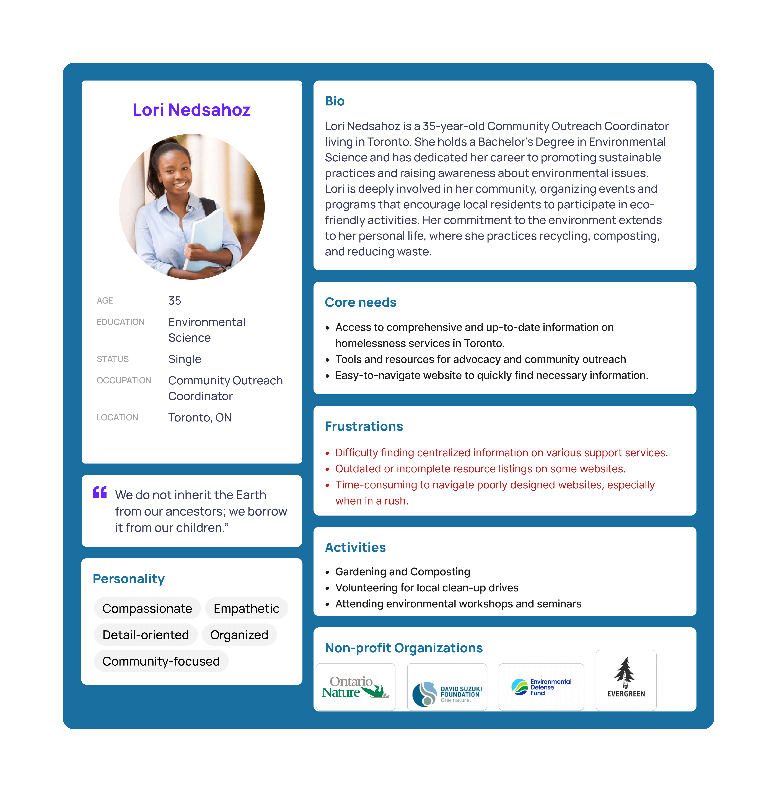

Toronto Environmental Alliance Website Design


Role & Responsibilities: Visual Designer and Content Creator Timeline & Scope: 3 weeks
Toronto Environment Alliance:
35 years of building a GREENER CITY for all
Mission:
Promote a greener Toronto
Vision:
A green, healthy and equitable city with economic activity that sustains our environment
Bussiness Needs:
Donations, Supporters and Volunteers
My group worked on the Toronto Environmental Alliance website. It is a small non-profit organization about keeping Toronto clean and green, relying on donations and help from environmentally conscious people. We aim to revamp the site's navigation, layout and colours of the website to be more user friendly as well as add features from our research to bring in and retain more people for donations and volunteering.
We created a proto persona to see what type of research objective questions to ask in the user interviews and created a Google survey which gave us the resources to move on to the next phase.
| Objective 1 | Objective 2 | Objective 3 |
|---|---|---|
| Finding the best design that will pull the visitor to engage in the cause of the Non-Profit Organization | Refreshing the design, updating the navigation system more intuitively, reorganizing the visual hierarchy and designing for accessibility. | Analyzing people's ideology and key motivators to find out how how to attract new supporters, keep existing ones and entice new visitors to become members |
With the user research created from our research we got the necessary information to formulise an affinity diagram to organize the information so we could create an empathy map and a user persona. With our user persona created, we wrote a user insight and built a problem statement.
Using the problem statement we brainstormed for feasible and effective features to include in our redesign of the site with the prioritization matrix and define a value proposition statement. We created a user scenerio and user journey map based on our problem statement. We started the user flow analysis and created a user flow while we started the wireframes for the prototyping phase.
Creating a loyal customer base comes by understanding the true meaning of serving others in an Empathetic Manner.
The Digital Revolution is transforming a relationship-based world into a transaction-based world.
The capacities and opportunities of individuals and organizations to serve each other, although greater than ever before, has become extremely hard to create and keep as the trust between the two seem to have been reduced.
For “Non-Profits” and “Charities”, this comes at a great loss.
Problem includes Lack of Communication and Disconnection with the target audience.
A wireframe from a few pages is created while we conduct the usability heuristics analysis and competitor analysis for the user flow. We went back and forth between the testing phase and kept iterating the webpage. A mood board and style guide are created along with the card sorting and sitemap during this process to give the website a more welcoming and warm feel and a more cohesive and smoother navigation experience for the user.
We utilised the heuristic usability testing, and the 5-second testing for our prototype
By giving the benefactors as many options possible for them to get as involved as they prefer, you can turn a “limited-Amount” patron into “Selfless and Highly Involved” Advocates. Simplicity is Key keep the information output concise, organized and consistent in your information output. If you want your users to return, there has to be something for them to return to.